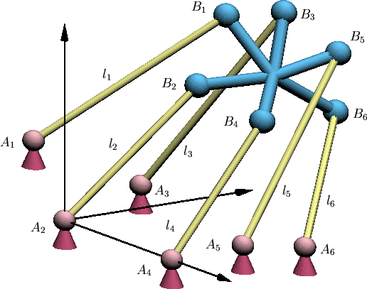
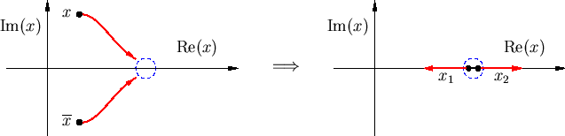

|  |
| Figure 5: A Stewart Platform |
| Bigger view of this platform |
Given a position of the body B in space, the distances l1, l2, ..., l6 are uniquely determined. A fundamental problem is the inverse question: Given a platform (positions of the Ai fixed and the relative positions between the Bi specified) and a sextuple of distances l1, l2, ..., l6, what is the position of the platform in space?
It had long been understood that several positions were possible for a given sextuple of lengths. An early work in 1897 showed there could be as many as 16 different positions [Br]. This leads to the following enumerative problem.
In the early 1990's, several approaches (numerical experimentation [Ra], intersection theory [RV], Gröbner bases [Laz], resultants [Mo1], and algebra [Mo2]) each showed that there are 40 complex positions of a general Stewart platform. The obviously practical question of how many positions could be real remained open until 1998, when Dietmaier introduced a novel method to find a value of the distances l1, l2, ..., l6 with all 40 positions real.
Dietmaier's method will find future applications to other problems of this kind. He began with a formulation of the problem as a system of equations depending upon the distances l1, l2, ..., l6. An initial solution for a given instance of the distances gave 6 real solutions and 17 pairs of complex conjugate solutions. He then used an ingenious algorithm to vary the distances in search of a configuration with all 40 solutions real.
This algorithm systematically varies the distances with the intention of increasing the number of real solutions. It proceeds in two stages. In the first stage, a pair of complex conjugate solutions (x, xbar) are driven together, eventually creating a double solution, while at the same time the existing real solutions are kept bounded away from one another. At the formation of a double (necessarily real) solution, the distances are further incremented to create two new nearby real solutions (x1, x2), which are then driven apart in the second stage. This procedure is repeated again with another pair of complex conjugate solutions, and et cetera. Figure 6 illustrates the two stages.
|  |
In each stage, Dietmaier accomplishes the given task (eg. colliding conjugate solutions) by linearizing the system at the current solutions and then solving a linear program for the optimal increment of the distances for the given goal. Changing the distances, he uses Newton's method beginning with the current solutions to find solutions for the new set of distances, and then repeats this procedure until the goal is achieved (eg. the conjugate pair collides). This is an application of numerical homotopy continuation [Ve].
While there is no guarantee that this method will even successfully collide two conjugate solutions, Dietmaier uses it to find a sextuple of distances with all 40 solutions real. While at each step the solutions are only numerical approximations to the actual solutions, the condition number N guarantees the existence of a genuine solution within 1/N of each approximate solution. Since the approximate real solutions were separated by more than 2/N, the requirement that non-real solutions occur in complex conjugate pairs forced these genuine solutions to be real.